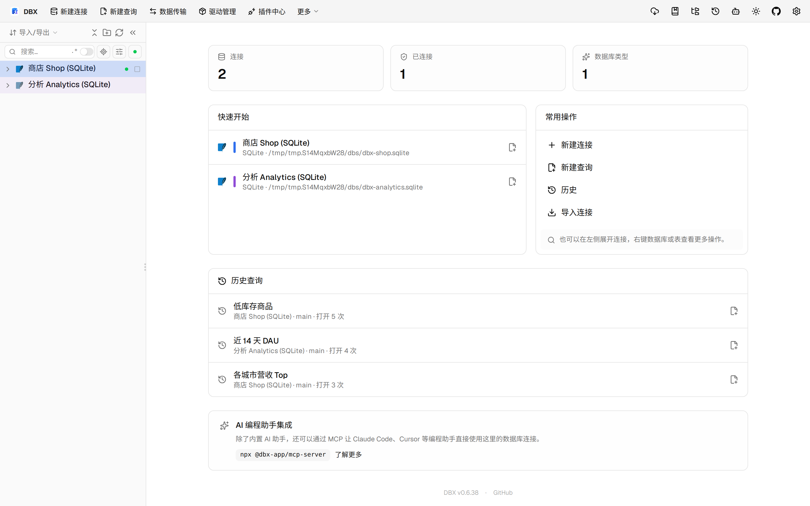

#11535 界面预览
commit 47acd37 · 回到 PR · 本次 PR 让 OceanBase Oracle 的 SQL 补全能按输入搜索独立的 PROCEDURE/FUNCTION，并修复带引号名称、字面通配符和切换 schema 后旧补全结果回弹的问题；前端还会在相关上下文变更时立即让旧请求失效。
⚠️ 这次录制有 8 步没能按计划执行；带 ⚠️ 的截图拍摄于步骤失败之后，画面未必是说明文字所描述的状态。
红线是鼠标走过的轨迹，红色圆环是一次点击；底部文字是这一步在做什么。多个场景各自从应用初始状态开始。空格暂停，← → 逐段查看。
 ⚠️ OceanBase Oracle 补全过程 · 打开订单表后的数据网格
⚠️ OceanBase Oracle 补全过程 · 打开订单表后的数据网格
 ⚠️ OceanBase Oracle 补全过程 · 查看带引号过程名称的补全候选
⚠️ OceanBase Oracle 补全过程 · 查看带引号过程名称的补全候选

⚠️ OceanBase Oracle 补全过程 · 查看字面通配符名称的补全候选